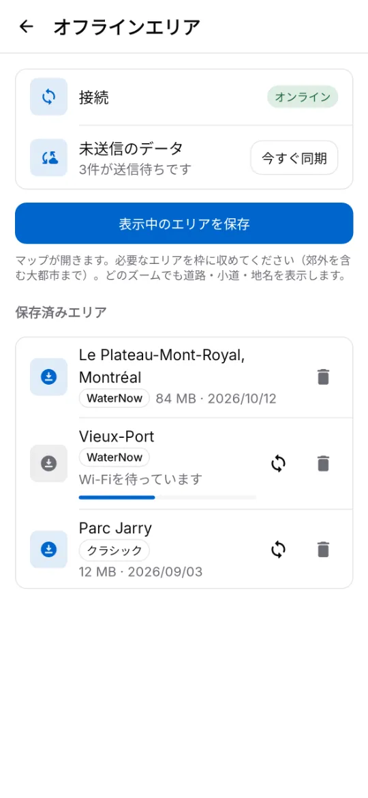

カナダ・ケベック州モントリオール
モントリオールで無料の水とトイレを見つけよう
旧港、モン・ロワイヤル、プラトー、ラシーン運河。どこにいても、WaterNowが近くの無料の給水スポットとトイレを表示し、そこまで案内します。
Android版をダウンロード- 無料
- 広告なし
- アカウント不要

WaterNowの特長
無料
マップ、検索、ルート案内、オフラインマップはずっと無料です。
広告なし
アプリのどこにも広告はありません。
アカウント不要
ゲストモードでも、マップの閲覧、ルート検索、給水の記録ができます。
オフライン対応
街を保存しておけば、マップとスポットが通信なしで使えます。
ターンバイターン案内
徒歩、自転車、車に対応。曲がり角ごとに音声でお知らせします。
バリアフリー・犬連れ対応
バリアフリーのスポットや、犬用の水があるスポットだけを表示できるフィルター。
7つの言語
日本語、英語、フランス語、スペイン語、ドイツ語、ポルトガル語、ルーマニア語。
プライバシー重視
トラッカーはありません。位置情報は周りの水を探すために使われ、データはいつでもエクスポートまたは削除できます。
アプリの画面


使い方
アプリをダウンロード
Android版を無料で、このサイトから直接ダウンロードできます。
アカウントなしでもOK
ゲストとして続行するか、アカウントを作成するかを選べます。
案内に沿って進む
近くの給水スポットやトイレを選んで、ルート案内に従うだけです。
よくある質問
WaterNowは無料ですか？
はい。マップ、検索、ルート案内、オフラインマップは無料で、広告もありません。任意の追加機能もありますが、便利な機能はすべて無料のままです。
アカウントは必要ですか？
いいえ。ゲストでもマップの閲覧、ルート検索、給水の記録ができます。アカウントがあれば、スポット、レビュー、写真も追加できます。
オフラインでも使えますか？
はい。大都市とその周辺まで、必要なエリアを保存しておけば、マップとスポットが通信なしで使えます。
どのスマホで使えますか？
Androidで使えます。ボタンからアプリをこのサイトから直接ダウンロードでき、インストール時に許可を求められます。
モントリオールで喉が渇いたら
WaterNowで、近くの無料の水とトイレをチェックしましょう。
Android版をダウンロード